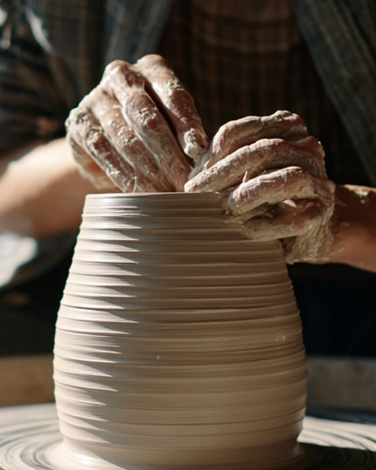

오래된 한옥 한 채를
온전히 다시 살립니다
실측부터 목재 선정과 시공까지 같은 사람이 끝까지 맡습니다
안녕하십니까.
다름한옥은 한옥을 고치고 짓는 목수의 집입니다.
기와와 서까래, 창호와 대청마루를 손보고, 단열과 설비는
지금의 살림에 맞게 바꿉니다.
고칠 수 있는 것은 남기고, 바꿔야 할 것만 바꾸겠습니다.


상담에서 준공까지, 일곱 단계
모든 공정을 직접 맡고, 단계마다 함께 확인한 뒤 다음 일로 넘어갑니다.
상담
어떤 집을 어떻게 쓰실지 듣고, 고칠 범위와 예산, 일정을 정합니다.
실측 · 도면
기둥 기울기와 지붕 처짐까지 실측하고, 고칠 곳을 도면에 표시합니다.
해체 · 구조 보강
썩은 부재를 걷어내고 기둥과 보를 바로잡습니다. 남길 수 있는 것은 남깁니다.
지붕 · 기와
서까래와 개판을 손보고 기와를 다시 잇습니다. 물이 새던 자리를 먼저 잡습니다.
창호 · 벽체
창호를 짜 넣고 흙벽과 단열을 보강합니다. 문살은 옛 모양을 살립니다.
설비 · 마감
난방과 전기, 수도를 지금 기준으로 넣고 마루와 벽을 마감합니다.
준공 · 점검
함께 둘러보고 열쇠를 드립니다. 첫 장마가 지나면 한 번 더 살핍니다.
다름한옥이 집을 대하는 법
새는 곳 하나만 보고 공사를 정하지 않습니다. 네 가지로 집 전체를 살핀 뒤
지금 고쳐야 할 것과 조금 두고 봐도 되는 것을 나누어 말씀드립니다.
-
봄
다름한옥은 먼저 봅니다.
기둥의 기울기와 지붕의 처짐, 흙벽의 금까지 눈으로 먼저 확인합니다.
집이 보내는 신호는 겉으로도 드러나기 때문입니다. -
들음
다름한옥은 듣습니다.
언제 지었고 어디를 고쳤는지, 어느 방에서 지내시는지 충분히 듣습니다.
말씀을 끝까지 듣는 것에서 공사가 시작됩니다. -
물음
다름한옥은 묻습니다.
비가 새기 시작한 때와 겨울에 추운 방을 꼼꼼히 여쭙니다.
원인은 대개 살아온 기록 속에 남아 있습니다. -
잼
다름한옥은 잽니다.
기둥과 보의 치수, 나무의 마름 정도를 직접 재어 원인을 찾습니다.
손으로 확인한 뒤에 고칠 범위를 정합니다.
지은 집
고치고 지은 한옥을 모았습니다. 옆으로 밀어서 둘러보세요.
상담 시간
- 점심시간 13:00 - 14:00
- 일요일 · 공휴일 예약제
| 구분 | 월 | 화 | 수 | 목 | 금 | 토 | 일 · 공휴일 |
|---|---|---|---|---|---|---|---|
| 오전 | 09:30 - 13:00 | 09:30 - 13:00 | 09:30 - 13:00 | 09:30 - 13:00 | 09:30 - 13:00 | 09:30 - 14:00 | 예약제 |
| 오후 | 14:00 - 18:30 | 14:00 - 18:30 | 14:00 - 18:30 | 14:00 - 20:30 | 14:00 - 18:30 | 상담 없음 |
목요일은 저녁 20:30까지 상담합니다. 토요일은 점심시간 없이 오전만 엽니다.
비가 새거나 기둥이 기울어 급한 경우에는 예약이 없으셔도 먼저 전화 주세요. 당일 방문할 수 있는지 확인해 알려 드립니다.
예약 · 문의 02-123-1234공지사항
상담 신청
이름과 연락처만 남겨주시면 됩니다. 통화로 일정을 잡고, 집을 직접 보고 실측한 뒤 견적을 드립니다.
-
방문 견적
사진만으로는 정확할 수 없습니다. 집을 직접 보고 실측해 항목별 견적서를 드립니다. 실측과 견적은 무료입니다.
-
책임 시공
견적서에 없는 추가 비용을 만들지 않고, 약속한 일정과 마감을 지킵니다. 준공 뒤 첫 장마까지 저희가 살핍니다.
온라인 상담 신청
남겨주시면 확인 후 연락드립니다.